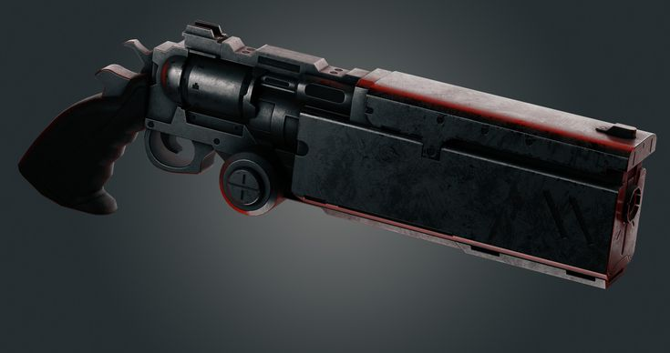

In the world of Terra, humans and yokai have failed to coexist with each other for almost a millennium, and in doing so, the world of Terra has been brought nearly to ruin. With the world at the brink of destruction, the two leaders of the opposing factions came to a ceasefire. They would each carve out their own piece of the world to have as their own, and in doing so, they would leave each other alone permanently, never having any interactions with each other ever again. Because of this, it was seen as taboo for half-breeds to exist.
In the country of Pyrois, the technological age began anew in the year 19XX. We center our focus on Jackal, a half-human, half-yokai hybrid who lives hiding in a backwater village away from any major news. Despite his half-blood, there is nothing visible on him that would make you think that he was a yokai. He lives a quiet and simple life with his wife and daughter, who knows his nature yet chooses to love him anyway. Everything is peaceful until his daughter exhibits Yokai behavior and sprouts a tail while he is hunting. The townspeople, thinking his wife was the Yokai in disguise, put her and his daughter to death, burning them in his own house. When he returned and found his family dead, he went on a rampage and destroyed the entire village. A mass Yokai warning alarm was issued to the city since the energy a Yokai can emit can be tracked. Now wanted, he seeks revenge on those who revealed his secrets and killed his family, even if he becomes what he hates to do it.
